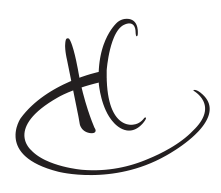
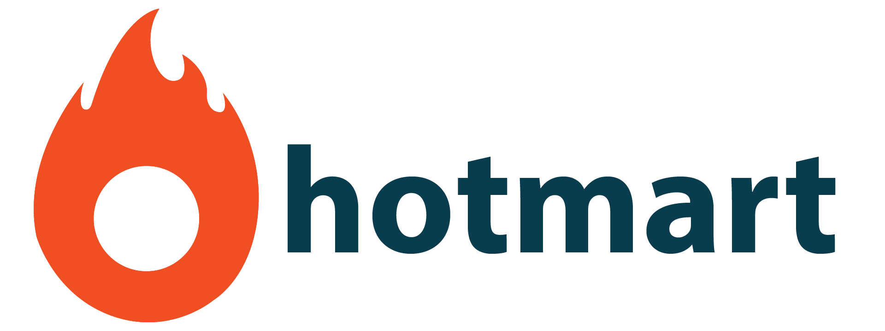

Próximo case — Meu Arco
Como o Cosmos evoluiu de um sistema local para uma plataforma white-label multi-marca, integrando outras marcas da Hotmart Co.
2021 - 2022
Cosmos Core, Marketing, Web Products, Mobile e Support Library
CPO, CTO, Head de Design, lideranças de Produto, Marketing e M&A
O Cosmos atendia apenas os produtos da Hotmart. Com a expansão como holding, o sistema precisava escalar para outras marcas, sem retrabalho de design ou engenharia a cada nova integração
Evoluir o Cosmos de um design system local para uma plataforma white-label multi-marca, capaz de absorver novas aquisições e expandir para todas as frentes do produto core da Hotmart.
Liderei a evolução do sistema: defini a arquitetura de tokens, estruturei as frentes do chapter, tomei as decisões técnicas e estratégicas e conduzi os alinhamentos com CPO, CTO e lideranças de M&A.
O Cosmos já existia como o design system da Hotmart. O problema era que ele foi construído para um contexto específico: um produto, uma marca, React como único framework. Com a Hotmart Co. se tornando uma holding e adquirindo a Teachable nos EUA, esse contexto deixou de funcionar.
Os principais limitadores da versão anterior:
Se cada empresa adquirida precisasse de um sistema próprio, o custo operacional escalaria de forma insustentável. A solução era evoluir o Cosmos para que qualquer marca da holding pudesse herdar o sistema, mantendo identidade própria sem duplicar trabalho.
Como liderança do Cosmos, eu participava ativamente nas análises de M&A para prever o impacto da integração de novas marcas
O chapter foi organizado em frentes com foco, cadência e critérios de entrega próprios. Cada frente tinha designers e desenvolvedores dedicados, com um Tech Lead como meu par na direção técnica.
Frente principal, responsável pela infraestrutura global do Cosmos como Core Components e Tokens
Componentes web para o time de growth e landing pages.
Atendimento aos squads do produto plataforma.
Sistema para apps iOS e Android.
Ilustrações e assets de apoio para todos os produtos.
{{ g.caption }}
Para um detalhamento de como o Cosmos era estruturado, você pode conferir abaixo o vídeo de quando abrimos a cozinha da Hotmart para a comunidade de produto, design e tecnologia.
Antes de refatorar qualquer coisa, mapeamos o estado real do sistema e do negócio.
Durante todo o processo, trabalhamos alinhados com a Teachable como primeiro piloto da versão global.
Medir o ciclo de tempo de design e desenvolvimento em todos os times da Hotmart Co.
Alinhar stakeholders — entender as necessidades de produto, marketing, mobile e as empresas adquiridas.
Mapear componentes com visão de escalabilidade para a versão global.
Estudos de frontend para encontrar um framework compatível com React, Angular, Vue e mobile, o que nos levou ao WebComponents.
Calcular o CSAT da versão atual do Cosmos como baseline.
Criar uma nova lógica de design tokens a partir do feedback direto de designers e desenvolvedores.
Em vez de criar sistemas separados por marca, projetamos uma camada de design tokens desacoplada da identidade visual, com suporte nativo a light e dark mode. Qualquer produto poderia herdar o sistema e aplicar sua marca sem duplicar componentes.
A Hotmart tinha mobile, web com Angular e React coexistindo em frentes diferentes — além da previsibilidade de novas marcas com stacks distintas. WebComponents garantiam compatibilidade multi-framework sem precisar de soluções específicas por stack.
Quando entendemos que o legado era muito maior em complexidade do que o estimado, a estratégia de migração mudou. Em vez de tentar tombar o monolito de uma vez, esperamos a Hotmart quebrar o legado em micro frontends — e implementamos o Cosmos em cada quebra de forma progressiva. Isso evitou retrabalho em escala.
Co-criado com o time de UX Writing, o sistema passou a embutir texto, tom e contexto diretamente nos componentes. Ao escolher um botão de ação destrutiva, o sistema já definia o texto adequado — sem revisão manual para a maioria dos casos. O efeito foi duplo: designers ganharam velocidade, e o time de UX Writing passou a atuar em iniciativas estratégicas em vez de revisar textos operacionais.
{{ g.caption }}
A cobertura foi rastreada em tempo real via Cosmos Analytics, o que permitiu criar OKRs de sistema pela primeira vez, conectando a saúde do design system às metas trimestrais de produto. O CSAT foi medido em quatro dimensões: integração, uso diário, adoção de novos componentes e qualidade do suporte.
Cosmos Analytics: cobertura em tempo real
O maior desafio não foi apenas técnico. Foi fazer os times adotarem o sistema de verdade. A virada veio com os Cosmos Partners: designers seniores de cada estrutura da Hotmart que se tornaram guardiões do sistema dentro dos seus times, responsáveis pela disseminação e pela qualidade de uso do Cosmos na sua frente. Essa responsabilidade gerava evidências concretas para o performance review, funcionando como reconhecimento real. A adoção acelerou quando o Cosmos deixou de ser uma iniciativa central e passou a ter defensores dentro de cada squad.
A maior revisão de rota também veio da realidade: o legado era muito maior em complexidade do que estimamos. Em vez de migrar o monolito de uma vez, esperamos a Hotmart quebrar o legado em micro frontends e implementamos o Cosmos em cada passo. Essa decisão atrasou resultados no curto prazo e evitou retrabalho em escala.
“Faz quase 1 ano que consigo me desenvolver com a ajuda do Hiago, foi transformador. Sei que vou levar esses momentos e esse aprendizado para o resto da minha vida.”